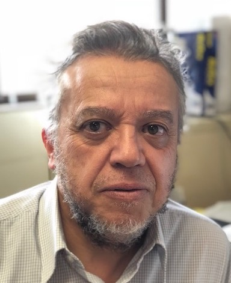

workshop in conjunction with ACCV 2018 onRGB-D - sensing and understanding via combined colour and depth |
| Home | Call for papers | Submission | People | Invited Speakers | Program |
|  | ||
|
Mohammed Bennamoun
The University of Western Australia |
Rikke Gade
Aalborg University |
|
|
3D Computer Vision & Robotics |
Title: Analyzing people using multi-modal data |
|
|
Robotics has made significant progress in cases of structured and constrained environments, e.g. manufacturing. However, it is still in its infancy when it comes to applications
in unstructured and unconstrained situations e.g. social environments. In some aspects such as speed, strength and accuracy, robots have superior capacities compared to humans
but that is not the case for person/object recognition, language, manual dexterity, and social interaction and understanding capabilities. The robotics community believes that
robotics will go a long way if robots are able to attain the (i) recognition capabilities of a two-year-old baby, (ii) language capabilities of a four-year-old child, (iii)
manual dexterity capabilities of a six-year-old child, and (iv) the social interaction and understanding capabilities of an eight year old child.
Developing a computer vision system with Human visual recognition capabilities has been a very big challenge. It has been hindered mainly by: (i) the non-availability of 3D sensors (with the capabilities of the human eye) which are able to simultaneously capture appearance (colour and texture), surface shapes of objects while in motion, and (ii) the non-availability of algorithms to process this information in real-time. Recently, a number of affordable 3D sensors appeared in the market which is resulting in the development of practical 3D systems. Examples include 3D object and 3D face recognition for biometric applications, as well as the development of home robotic platforms to assist the elderly with mild cognitive impairment. The objective of the talk will be to describe few 3D computer vision projects and tools used towards the development of a platform for assistive robotics in messy living environments. Various systems with applications and their motivations will be described including 3D object recognition, 3D face/ear biometrics, Grasping of unknown objects, and systems to estimate the 3D pose of a person. |
The world is populated with people and a multitude of applications related to automatic analysis of people will therefore always be present. Applications range from
monitoring the whereabouts of people, their identity and generally trying to understand and predict what they are doing. Computer vision algorithms have for decades
played a major role in this endeavor and with the rise of machine learning, this has become even more true in recent years. Despite the massive amount of research within
this field, we still do not have general purpose and robust algorithms that solve the fundamental problems in detection, tracking, biometrics, action recognition etc. One
of the major challenges is that the objects of interest exist in 3D space, whereas traditional computer vision algorithms focus on 2D images, i.e. information is lost.
Another challenge is that the illumination cannot be controlled in general scenarios and hence significant (and sometimes rapid) changes occur in the data.
Easier access to additional sensing devices has in recent years resulted in the notion of multi-modal computer vision. Especially depth sensors and thermal sensors have a huge potential to complement the traditional 2D algorithms. In this talk, we first touch upon the challenge of registration of spatio-temporal data. Hereafter we present examples of how we have utilized multi-modal data to enhance the performance in different applications related to analyzing people. |
|
|
Mohammed Bennamoun is currently a Winthrop Professor at The University of Western Australia (UWA). He served as a member of the Australian Research Council (ARC) College of Experts, and on the ARC panel for Excellence in Research Australia (ERA). He was an Erasmus Mundus Scholar and has been Visiting Professor at the University of Edinburgh, CNRS (Centre National de la Recherche Scientifique), Telecom Lille1, Helsinki University of Technology, University of Bourgogne and Paris 13. He is the co-author of the books “A Guide to Convolutional Neural Networks for Computer Vision”, “Object Recognition: Fundamentals and Case Studies", and co-editor of “Ontology Learning and Knowledge Discovery Using the Web". He has published close to 100 journals and 250 conference publications. His areas of interest include control theory, robotics, obstacle avoidance, object recognition, artificial neural networks, signal/image processing, and computer vision. He served as a guest editor for special issues in International journals, such as the International Journal of Pattern Recognition and Artificial Intelligence (IJPRAI). He was selected to give conference tutorials at ECCV, ICASSP, CVPR, and a course at the International Summer School on Deep Learning (DeepLearn2017). |
Rikke Gade is currently employed as Assistant Professor at Aalborg University, Denmark. She received her PhD in Computer Vision from Aalborg University in 2015. The thesis focused on analysis of activities in sports arenas; mainly occupancy analysis, activity recognition, and tracking of players. Most of her work revolves around the use of thermal video, to preserve privacy in public sports facilities. This has led to publications in top journals and international conferences, and she has been co-organizing workshops at CVPR and ICCV. Her research interests include computer vision analysis of human activities, applied both for analysis of human behavior at public spaces as well as for analyzing sports activities. She also works with robot vision. The research group at Aalborg University has a strong focus on solving real world problems using vision. For this purpose, they are working with a large range of imaging sensors, including Lidar, stereo imaging, structured light, thermal imaging, etc. |
|